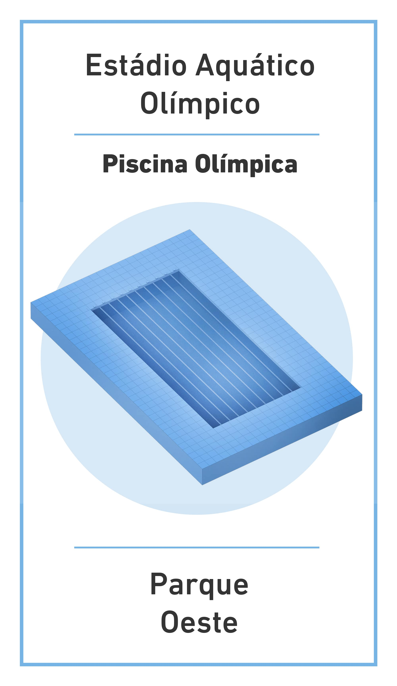

No White Elephants.
Legacy, Right?
Exploring Nomadic Architecture at the Rio 2016 Olympics
Produced by the Data Office of the City Hall of Rio de Janeiro
Since the beginning of the project to host the Rio 2016 Olympic Games, the Rio City Hall aimed to ensure efficiency in a simple and economical way, leaving a legacy in infrastructure, services, transportation, and education for the city.
To achieve this goal, the preparation for the Games was used to accelerate long-awaited changes, capable of improving the quality of life for residents and making the city more integrated and just.
Here, there were no “White Elephants”, a term commonly used to describe stadiums built for large events that, after their conclusion, become problems. These structures often become idle, abandoned by the government, which either cannot or does not know how to manage these spaces.
However, in Rio de Janeiro, the story was different.The Rio City Hall innovated by adopting the so-called nomadic architecture in much of the Olympic project.
This approach, based on the idea of a nomadic people without fixed housing, which constantly moves, foresees the reuse of installations for other purposes after the events.
This architectural choice had positive impacts, not only environmental, by reusing buildings and reducing environmental impact, but also social, by ensuring that the structures were truly beneficial to the population, as well as economic benefits, by creating thousands of direct and indirect jobs.
Thus, like the toy where pieces with different shapes and colors become new forms when combined, nomadic architecture allowed three large structures built for the Games to become a legacy for the city. The structures are: the Future Arena, located in Barra da Tijuca, a sports facility used for handball at the Olympics and goalball at the 2016 Paralympic Games; the Aquatic Stadium, the venue for swimming and water polo competitions; and the International Broadcasting Center (IBC), used by the press for broadcasting the Games.
The plan for reusing the temporary structures, halted in 2017 by the previous administration, was resumed again in 2021 by the current administration. In this way, the City Hall has been able to reuse bleachers, fixtures, drywall walls, facades, roofs, swimming pools, and pillars, to create new structures for cariocas.
Some of the materials used in the Future Arena are also being allocated to two other projects.
The Lins Imperial Samba School, located in the Lins de Vasconcelos neighborhood, received the donation of acoustic insulation to correct sound leakage problems in its headquarters.
The Luso-Brasileiro Stadium, which has already received the structures of the bleachers and roof. The donation will allow increasing the capacity of the venue from 5,044 to 16,000 spectators. The removal, transportation, and work will be funded by the club itself.
The Olympic Aquatic Stadium, one of the structures designed with the concept of nomadic architecture for the Rio 2016 Olympics, has also begun to be dismantled to begin other projects. The same pool used in the competitions will be set up in Parque Oeste. Visitors will be able to use the pool where the American Michael Phelps, one of the greatest athletes in history, swam in the Games. The athlete, the biggest medalist in Olympic history (23 golds, three silvers, and two bronzes), won six of them in this same pool that will be available to all cariocas.

The park will be on a plot of more than 234 thousand square meters on Avenida Cesário de Melo, in Inhoaíba. The mega-park will be sustainable, preserving and offering new green areas for the city, with cultural and sports facilities. Among the improvements are the Olympic Village, Nave do Conhecimento, sports courts, ecumenical space, skate park, indoor gymnasium, stage, as well as a school for 720 students and a Child Development Space for about 30 children in full-time hours.
Cariocas will be able to swim in the same pool that athlete Michael Phelps swam in during the Olympics.
Kiosks and a space for workshops will also be built. The project foresees the cultivation of 1,100 trees and the planting of gardens in an area of approximately 34 thousand square meters. The reforested area will be 61.8 thousand square meters.
Another part of the structures of the installation that hosted the swimming events of the Rio 2016 Olympic and Paralympic Games was donated to Bangu Atlético Clube.
The club from the West Zone received materials that will allow covering the bleachers, the transmission area, the parking lot, and the access areas to the bathrooms and dressing rooms of the Proletário Guilherme da Silveira Filho Stadium, Moça Bonita. Bangu will also revitalize the parking lot and bleacher covers of the court and the roof of the main hall of its social headquarters.
And the newest transportation terminal in the city, the Gentileza Intermodal Terminal (TIG), inaugurated in February 2024, is also a product of the Olympic legacy. Approximately 700 tons of steel structures from the International Broadcasting Center (IBC) were used in the construction of Gentileza.
The IBC received more than ten thousand press professionals, who worked in the building where studios were located and the images of the official broadcasts of the Games were generated.
IBC Facade (Photo: Ricardo Cassiano / Rio City Hall)
The Gentileza Terminal was designed to be the arrival point in Rio for the BRT Transbrasil, with a minimum estimated demand of 150 thousand people transported daily. At the location, passengers can take feeder buses to various regions of the city, as well as the VLT — which was extended by about 700 meters from the Novo Rio Bus Station — to circulate in downtown Rio and reach Central do Brasil, Praça XV and Santos Dumont and Galeão airports.

Gentileza Terminal (Photo: Marcelo Piu / Rio City Hall)
Seen by the world, designed for those who live here. This is how the Rio City Hall has been executing the works of the Olympic legacy in the city. Ensuring that heritage is guaranteed for all cariocas.